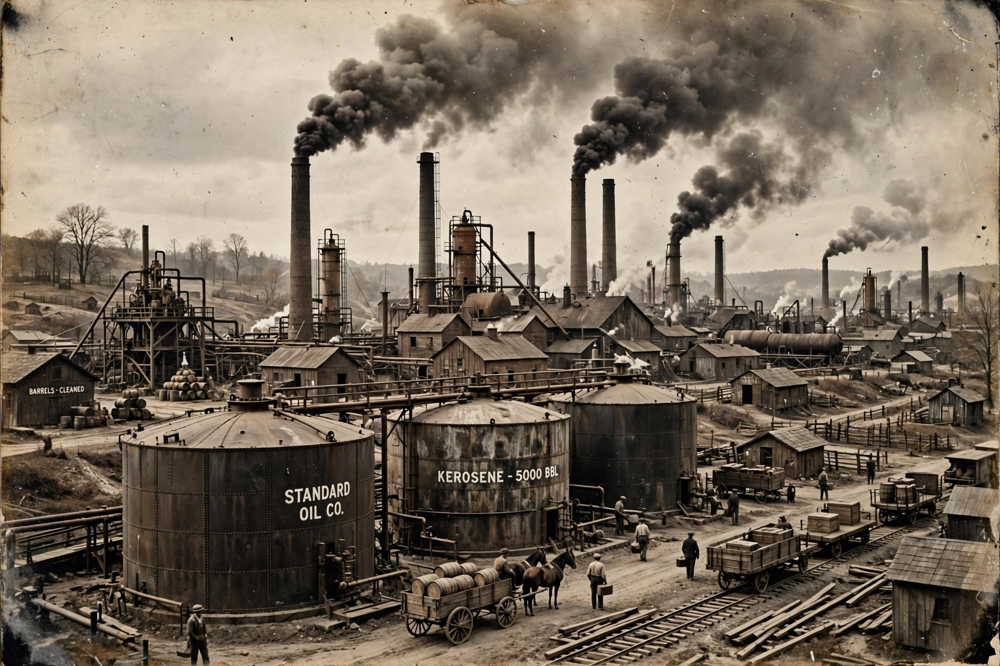

| Industry | Petroleum |
|---|---|
| Founded | 2 January 1870; Cleveland, Ohio, US |
| Founders | John D. Rockefeller, William Rockefeller, Henry Flagler, Stephen V. Harkness, Oliver B. Jennings, Benjamin Brewster, Jabez Bostwick |
| Defunct | 1911 (broken up) |
| Fate | Split into 34 companies by US Supreme Court ruling |
| Headquarters | Cleveland, Ohio; later New York City |
Standard Oil Company, Inc. was an American oil-producing, transporting, refining and marketing company founded in 1870 by John D. Rockefeller and partners. It grew into the first great business trust in the United States, dominating the oil industry before the US Supreme Court ruled in 1911 that it was an illegal monopoly and ordered it broken into 34 separate companies.
Rockefeller entered the oil business in Cleveland in the 1860s and, with his brother William and partners including Henry Flagler, incorporated the Standard Oil Company (Ohio) in 1870. Through horizontal integration, secret railroad rebates and aggressive acquisitions, Standard came to control roughly 90 percent of US refineries and pipelines by 1880. In 1882 the Standard Oil Trust was formed, and in 1899 the holding company was reorganised as Standard Oil Company (New Jersey).
Muckraking journalist Ida Tarbell's The History of the Standard Oil Company (1904) fuelled public anger. The federal government sued under the Sherman Antitrust Act in 1909, and on 15 May 1911 the Supreme Court decided Standard Oil Co. of New Jersey v. United States, ordering dissolution. The successor companies included Standard Oil of New Jersey (later Exxon), Standard Oil of New York (Mobil), Standard Oil of California (Chevron), Standard Oil of Indiana (Amoco), Continental Oil (Conoco), Atlantic Richfield and Ohio Oil (Marathon). Many of these later merged, and by the 2000s firms such as ExxonMobil, Chevron, BP and Marathon Petroleum had recombined much of the old trust.
Standard Oil remains the archetypal monopoly in American business history, central to debates about antitrust law, corporate power and the fortune of Rockefeller, often regarded as the richest American of all time.